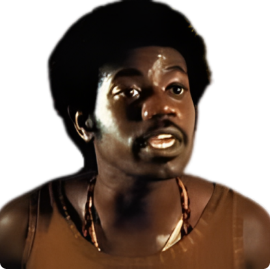

Fernando Ferreira Meirelles (São Paulo, 9 de novembro de 1955) é um cineasta, ativista, produtor e roteirista brasileiro. É conhecido principalmente pelo filme "Cidade de Deus", lançado em 2002 pela Lumière no Brasil, e pelo qual foi indicado ao Oscar de melhor diretor.
Sinopse
No coração do Rio de Janeiro, a favela Cidade de Deus é um caldeirão fervilhante de violência, drogas e desespero. O filme segue a vida de diversos personagens ao longo de décadas, mas especialmente acompanha a ascensão do temido traficante Zé Pequeno, desde sua infância como Dadinho até se tornar um dos líderes do crime mais poderosos da favela. Buscapé, um jovem aspirante a fotógrafo, narra a história, revelando os desafios e perigos enfrentados por aqueles que tentam escapar da violência que permeia suas vidas.
Sobre
"Cidade de Deus" é um filme brasileiro dirigido por Fernando Meirelles e Kátia Lund, lançado em 2002. Baseado no romance homônimo de Paulo Lins, o filme retrata de forma crua e realista a vida na favela Cidade de Deus, no Rio de Janeiro, abordando temas como violência, pobreza, drogas e a luta pela sobrevivência em um ambiente hostil.
Kátia Lund (São Paulo, 1966) é uma diretora de cinema e roteirista brasileiro-estadunidense. Seus trabalhos mais notáveis são a codireção do filme "Cidade de Deus" e do documentário Notícias de uma Guerra Particular, que inspiraria, além de muitos filmes e documentários brasileiros, o ex-capitão do BOPE, Rodrigo Pimentel, roteirista do filme "Tropa de Elite".
Enredo
O filme começa nos anos 1960 e acompanha a infância de Buscapé e Dadinho na favela Cidade de Deus, mostrando como suas vidas são afetadas pela violência e pelo crime desde cedo. Dadinho, mais tarde conhecido como Zé Pequeno, torna-se um dos traficantes mais temidos da favela, enquanto Buscapé busca uma saída por meio da fotografia. O enredo se desenrola ao longo de décadas, mostrando a ascensão de Zé Pequeno ao poder, os conflitos entre gangues rivais, as tentativas de Buscapé de escapar da vida do crime e o impacto da violência na comunidade.

O TRAFICANTE TEMIDO
ZÉ PEQUENO
O FOTOGRAFANTE
BUSCAPÉ
Lançamento
"Cidade de Deus" foi lançado nos cinemas em 2002, recebendo aclamação da crítica internacional e sendo indicado a quatro Oscars, incluindo Melhor Diretor e Melhor Roteiro Adaptado. O filme tornou-se um marco do cinema brasileiro contemporâneo e continua a ser reverenciado como um dos melhores filmes brasileiros de todos os tempos.